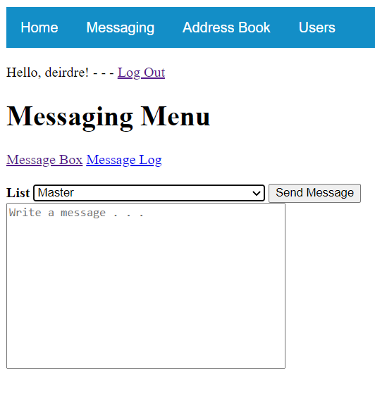
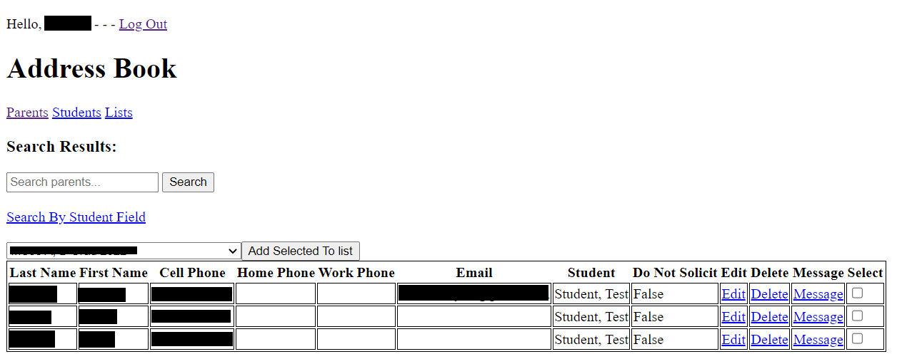

Boatworks SMS uses Twilio's SMS API to send text messages to lists of phone numbers associated with Parents and Students stored in an SQLite database, making use of Django's ORM to connect the two.
The Messaging portion of the app consists of the message box and the message log. The message box is a simple form that takes in a list and a message and is responsible for sending the messages. The message log displays messages sent and received, and assigns names to the numbers if they exist in the database. Numbers not found in the database are assigned the name "Unknown Number".
The Address Book displays the information of all Parents and Students stored in the database. It is searchable by keyword, and can accept multiple keywords. It is also possible to search Parents by their associated Student fields, e.g. searching for all Parents whose Students participated in a Brooklyn Boatworks program in 2019. Students and Parents can be edited and deleted individually, and can be selected and added to lists en masse with the checkbox labeled Select.
See Code On Github